Here's How I Shipped 2,500 PRs Last Month to Production
Lauren Tan's 38-minute talk on turning a personal agent setup into a Michelin kitchen for software: trust your agents by giving them the ability to verify their own work, teach them senior-engineer workflows, and reshape your codebase so the shortcut is the right path.
By Lauren Tan (@poteto)Grok Bot @ SpaceXAI · prev. Cursor, Meta, Netflix38 min original recording
Watch Lauren Tan's talk on X. Timestamp labels throughout this guide (e.g. 12:32) point to the corresponding moment in the recording.
Self-recorded and posted free on X (September 2026) — it was originally prepared for Cursor Compile in London, but Lauren was livestreaming for Grok Bot Galaxy that week and released the talk online instead.
About the numbers. The post title says 2,500 PRs; the title slide says “i shipped 2000 PRs last month” (with “(good)” scrawled above the 2000), a later slide is captioned “i shipped 5000+ PRs in 6 months” over three GitHub contribution graphs (3,159 / 4,681 / 5,284 commits), and the auto-generated captions say “2,000”. This guide keeps each number attached to where the talk itself shows it — the volume is the hook, not the method.
★
TL;DR — the whole talk in 12 lines
Volume is a side effect of trust. Lauren never set out to ship ~2,000+ PRs a month; the skills, tools, and codebase changes she made all "laddered up to this idea of trust" 04:14
The 1-to-5-agent phase is the hardest to escape. You babysit every chat and course-correct constantly; if you leave, nothing happens (or the wrong thing does). Scaling to 100 agents without trust just produces "a ton of slop pull requests", regressions, and bugs 05:38
Trust = verification. The unlock was a verification skill: teach the agent to run the real app, take performance traces and heap snapshots (via the Chrome DevTools protocol), and read them itself 03:52
A verification skill has two halves: a CLI that reproducibly drives the app and collects proof, and a feature map that records what features exist and how users reach them. "A feature map gives context. A CLI gives control." 09:19
Verification covers correctness — "does the checkout button actually check out the cart?" — but not quality. Layer on skills that teach agents to work like real software engineers (her pstack plugin: debugging, feature development, prototyping playbooks) 12:32
Whenever you correct an agent, fix it at the lowest possible layer, in this order: 1) codebase, 2) static analysis (lint/compiler/CI), 3) rules/Bugbot, 4) skills, 5) "style guide". Best of all, make the mistake categorically impossible with better data structures or architecture 15:51
Your codebase is the agent's memory. Agents extend the patterns they see — including bad ones. One innocent workaround becomes a de-facto pattern within weeks, "like a virus" 20:43
Every team needs a gardener to nip anti-patterns in the bud: delete tech debt, keep one paved path, and write a lint rule against anything that shouldn't exist (a lint rule at least "stops the bleeding") 24:28
Dune, the agent-friendly framework powering Grok Bot, makes the shortcut the right path: five nouns organize every app, process boundaries are visible in the folder tree, and a feature "adds files, not registry branches" 26:42
Automations close the outer loop. Grok Bot routines subscribe to Slack threads and Sentry alerts and auto-kick off cloud agents that reproduce bugs and open PRs — no elaborate "company brain" infrastructure required 32:34
Design for minimal context. A locked-down, conventional codebase is annoying for humans but lets agents (and non-engineer pilots) "do the right thing by default" 19:36
The kicker: none of this is a secret — "it's a lot of hard work". Do it, and "you trust the environment so much that your agents can just be free" 37:29
Trust ladderVerification skillsFeature map + CLIpstackCodebase as memoryDuneAutomations
01
The story — drowning in manual performance work
From the React team to a wall of pull requests 02:02
Six months before the talk, Lauren joined Cursor. There were no agent skills to use, the codebase was new to her, and the product was new too: Cursor was building the replacement for the Cursor IDE — the new agents window. That window had serious performance problems, and because she had spent time on the React team before joining, her manager asked her to help.
Her early time on the team was extremely manual: Chrome DevTools performance traces and heap snapshots, over and over, while PRs landed faster than she could check them.
"It felt almost an insurmountable wall of pull requests that just kept coming in, and I had no idea whether or not the performance of the app would be regressing… It got to the point where I just got really frustrated and started to think about, you know, wait — we have agents. What am I doing?" 03:20
The idea: teach the agent to verify 03:52
That frustration became her first big idea — verification skills:
the agent runs the application itself,
takes the performance traces itself,
understands the traces, finds the hotspots,
and basically climbs toward better performance automatically.
Over the following six months her productivity "skyrocketed". She never set a goal of thousands of PRs — but every skill, tool, and codebase change she made turned out to ladder up to one thing: trust.
"I had this thought in the back of my head: I am the bottleneck, and I need to be able to take all of the knowledge that I have as an engineer and impart it into my team of agents, so that I didn't need to be the blocker for everything." 04:42
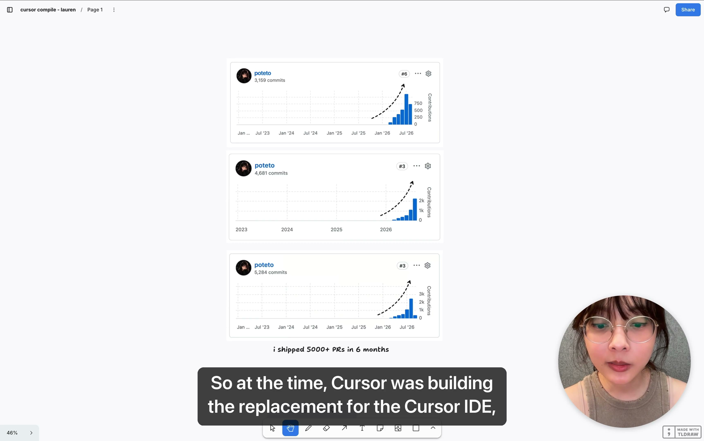
The receipts: three GitHub contribution graphs (3,159 / 4,681 / 5,284 commits), captioned "i shipped 5000+ PRs in 6 months". The steep bars all start ~6 months before the talk. 02:00
02
The trust curve — why you can't spawn 100 agents yet
The talk's central mental model is a graph: trust on the Y axis, number of agents on the X axis — 1, 1 to 5, 5 to 10, 10 to 20, hundreds, thousands.
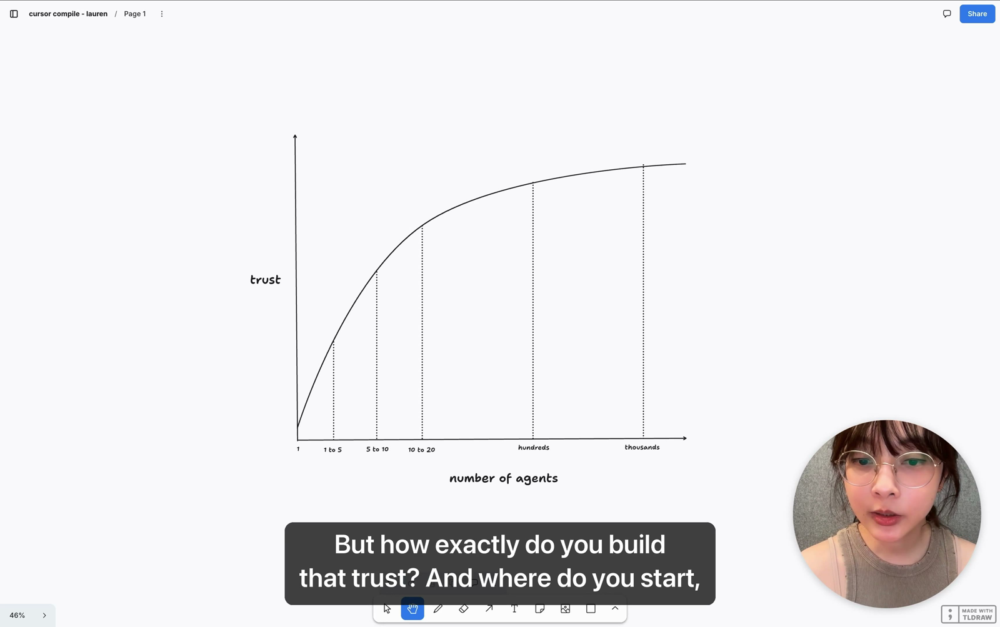
The trust curve. Volume of agents only pays off on the right side of the graph — and you can't skip to it. 04:45
The 1–5 phase is the hardest to leave 05:38
Everyone starts at "1 to 5": you feel like you have to babysit every chat, constantly course-correcting and intervening. If you're not there, "basically nothing happens and the agents do the wrong thing."
This phase is the hardest to get out of because the exit isn't visible — and the reason you're stuck is simply that you don't yet trust the work your agents hand back:
If you don't have trust and you spawn 100 sub-agents or cloud agents anyway, "you're going to quickly find that you just get a ton of slop pull requests, a bunch of regressions, and a bunch of bugs shipped — and no one's going to be very happy with that." 06:25
So the question that organizes the rest of the talk: how do you trust your agents more?
03
How do I trust my agents more?
Lauren's answer has three parts — and each gets its own section below:
Verification for correctness — teach agents to prove their own work.
High-quality skills that teach agents to work like real software engineers — e.g. her pstack plugin.
Refactoring/rewriting architecture to be agent-friendly — the "greenfield vs brownfield" question, she notes, applies here.
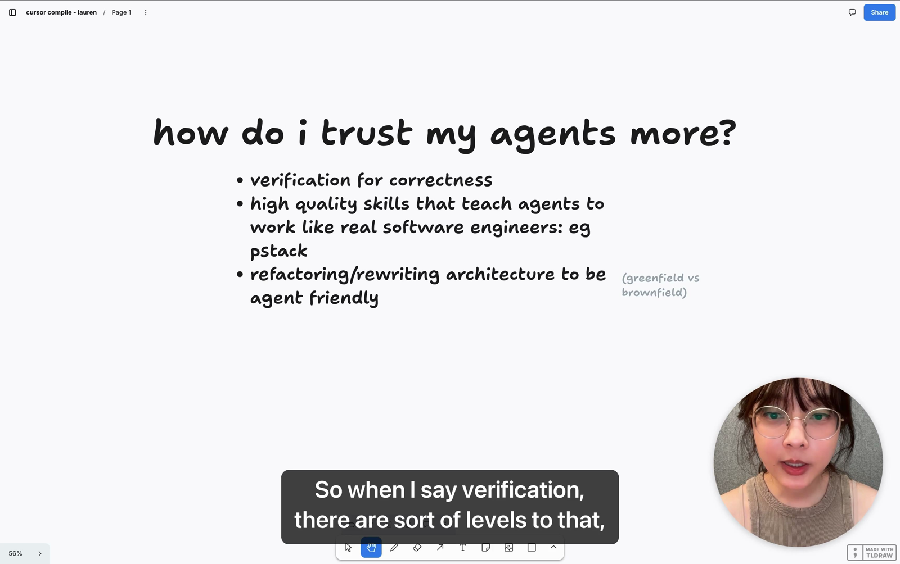
The talk's agenda in one slide. The handwritten aside — greenfield vs brownfield — is her shorthand for the cost of agent-friendliness in new vs existing codebases. 06:50
Verification is a spectrum 07:10
"When I say verification, there are sort of levels to that."
Lower end — verification skills: teach your agent how to run your application and use whatever debugging protocol you have (for web apps, the Chrome DevTools protocol): debug the app, take performance traces, take heap snapshots, and so on.
Higher end — formal verification: formal methods and languages like Lean or TLA+, so business-logic invariants are always true and you can formally verify the application is in a correct state. "Still very much an open question."
"Even if you don't have the ability to run formal methods — and very few people really do — with verification skills, you can get very far." 08:25
04
Verification skills — a CLI gives control, a feature map gives context
The first skill Lauren built on the Cursor agent window was Control Glass: a verification skill that teaches the agent to run the application and take traces through the Chrome DevTools protocol. It didn't start out this way — she iterated her way into a shape that turned out to be general:
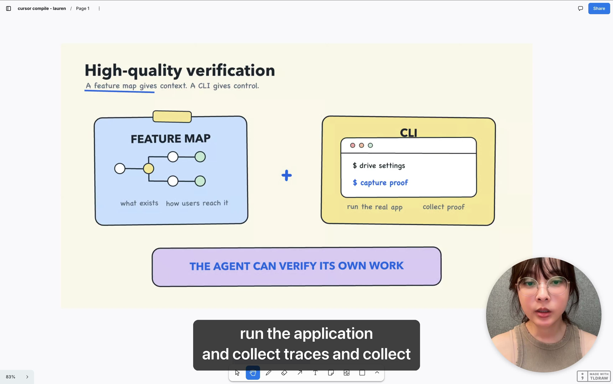
The key slide of the talk: feature map + CLI ⇒ the agent can verify its own work.09:17
Part 1 — a CLI, living inside the skill 09:19
You want agents to reproducibly run the application, collect traces, and collect empirical evidence that the code works and the performance bar is met. Rather than have agents write throwaway scripts that differ between sessions, put a real CLI inside the skill directory — and invest in making it good, so it handles all the use cases and can run the application correctly:
The verification skill's CLI (as shown on the slide)
$ drive settings # drive the real app to a feature
$ capture proof # run the real app · collect proof
Part 2 — a feature map: materialized memory 10:22
The second half is a term she coined: the feature map, "inspired by a sitemap". It records, as data stored in the skill directory in the codebase:
what exists — how the application works and what every feature does;
how users reach it — keyboard shortcuts, which DOM elements to click, and so on.
An automation maintains the feature map as the app changes. Lauren jokes it is "a form of materialized memory" — knowledge that persists outside any single agent conversation.
Why the combination is so powerful 12:01
Alone, the CLI let agents control the app but guess at what people wanted — a Slack report would come in with "a very vague screenshot… just three question marks", and the agent had no idea what the user meant. With the feature map, agents can understand requests from internal and external users, then use the CLI to verify their fix on the real app.
"We very quickly realized that the control verification skills were so useful that they've become more or less critical infrastructure for our team, and we constantly maintain it… The ability for an agent to verify its own work is extremely powerful." 12:22
Verification = correctness, not quality 12:32
Verification answers: does the feature do the thing you want? "Does the checkout button actually check out the cart?" Empirical evidence proves it works — but tells you little about performance or code quality. That's where the next ingredient comes in.
05
Skills that teach agents to work like real engineers
Lauren built a plugin called pstack — a collection of skills she doesn't deep-dive in this talk, but whose inspiration matters: they encode the workflows she personally uses as a software engineer for different kinds of tasks.
Debugging playbooks
Feature development playbooks
Prototyping playbooks
"There's a whole bunch of different playbooks and skills that ship in pstack that teach your agents how to write code the way that you want them to." 13:11
Where senior engineers come in 13:55
This is where the more experienced engineers on a team can contribute: a team repository of skills that makes every agent smarter. Combine those workflow skills with verification skills and agents produce work that is not just correct but high quality — and because of verification, you get real performance metrics, real numbers, statistics, and telemetry to back that claim.
Beyond the talk:pstack is published as a Cursor plugin by Lauren. Its official README identifies /poteto-mode as the main entry point, and its plugin manifest declares the MIT license. These links describe version 0.15.9 at commit e43c7ee; they are supplemental references, not a claim about the version shown in the recording.
06
Whenever you correct your agent — the 5 layers
Lauren calls this the slide to remember — "if there's only one thing you take away from my talk, it should be this": whenever you find yourself correcting an agent, invest the fix at the most effective layer, roughly in this order.
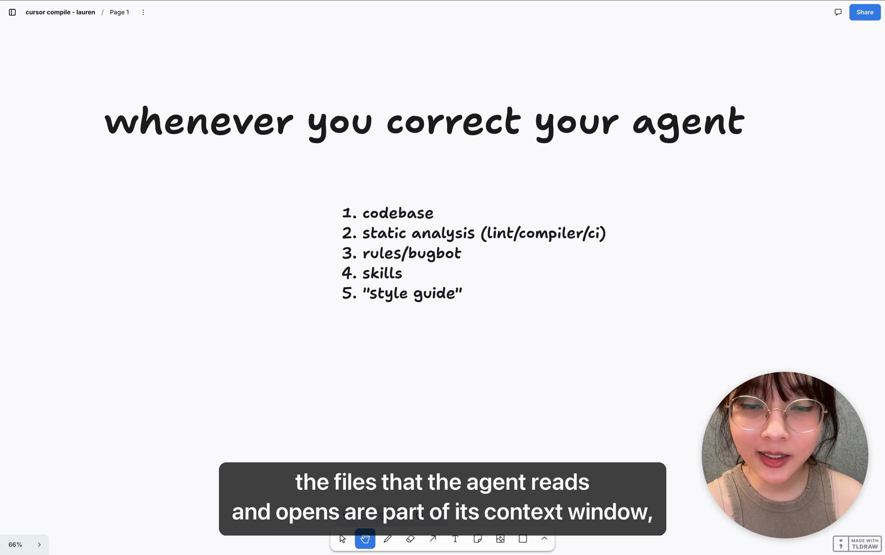
The five layers, weakest at the bottom. The quotes around "style guide" are hers. 15:30
#
Layer
Strength
What Lauren says about it
1
Codebase
Highest — structural
The best form of memory. Agents extend the patterns they see; the files they read are their context window. Refactor so the mistake becomes categorically impossible via better data structures or algorithms. Agents won't refactor your code in every PR — they copy what's already there. 16:05
2
Static analysis (lint / compiler / CI)
High — enforced
Guidelines and constraints enforced in the codebase. When you keep correcting the same mistake, add a lint rule — or better, change the code so the mistake is impossible. 16:49
3
Rules / Bugbot
Medium — guidance
Agents mostly follow them, but may forget to read a rule, or the person piloting the agent ignores them. Not as enforceable — still an important part of the environment. 17:23
4
Skills
Medium — guidance
Same enforcement profile as rules: mostly used, sometimes skipped. Layer them on top of layers 1–2. 17:23
5
"Style guide"
Low — humans only
Only enforceable by humans in code review. You can put style rules into rules/Bugbot/skills — but if you don't, you have "this big glaring hole" where humans must read every changed line. At a high PR rate, that's impossible. 17:53
"I definitely wouldn't recommend relying only on the style guide. Human reviews are a good place to start in terms of finding what's missing — but invest the time to think about the other four parts." 18:26
Her recommendation, in order: make the pattern categorically impossible through codebase, architecture, and data structures — otherwise reach for static analysis — and layer rules, Bugbot, and skills on top. 36:44
07
Your codebase is memory — anti-patterns spread like a virus
Why is the codebase the strongest layer? Because of how LLMs work: an agent's context window is largely the files it opens, and agents love to extend existing patterns rather than refactor. That cuts both ways.
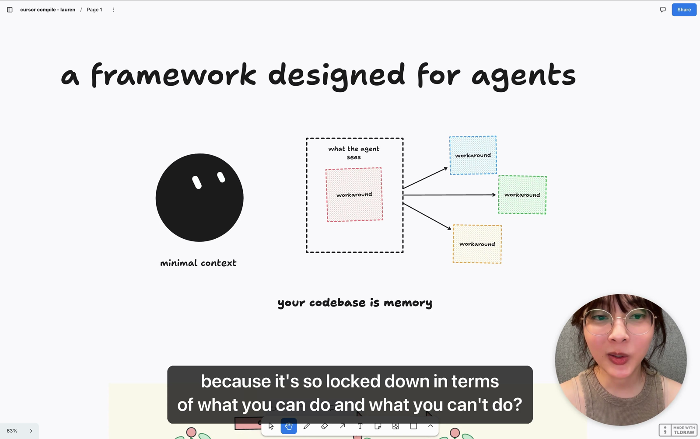
An agent with minimal context sees one workaround — and reproduces it everywhere it works. 19:50
"If you have existing anti-patterns, you will find that these will spread kind of like a virus. One small workaround, or a comment that explains a workaround — agents love to copy it, and in a matter of days or weeks the workaround has spread everywhere and becomes a de-facto pattern for all agents. That's a really bad place to be in." 20:45
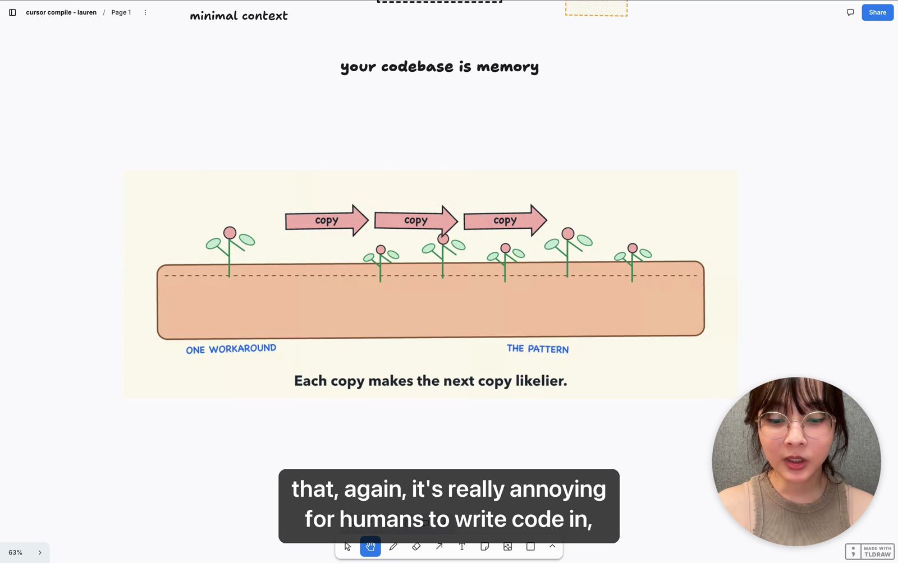
The garden view: one workaround → the pattern. "Each copy makes the next copy likelier." 22:35
Case study: agents leaving comments 23:02
Her favorite example of an "innocent" pattern that is actually bad: agents leaving comments in code. Humans leave comments for edge cases, workarounds, or notes to colleagues — seemingly fine. But in the Cursor codebase she watched agents use their own comments as justification for not solving the actual problem, papering over it with a band-aid or short-term fix.
"In Dune we made the choice to ban comments — so that agents would not just copy that pattern and propagate it everywhere in the codebase." 24:03
Her ideal is an agent codebase "so locked down it's really annoying for humans to write code in — but so conventional, so standardized, that even innocent-looking patterns are forbidden." That may sound hostile, but it's what lets the next agent keep the codebase good: it's "a garden" — left untended, the weeds win. 21:59
08
The gardener — Dune's three principles
Every team needs a role Lauren calls the gardener: someone thinking about what creeps into the garden — weeds, pests, organic growth you didn't plant — and nipping it in the bud before it propagates. 24:28
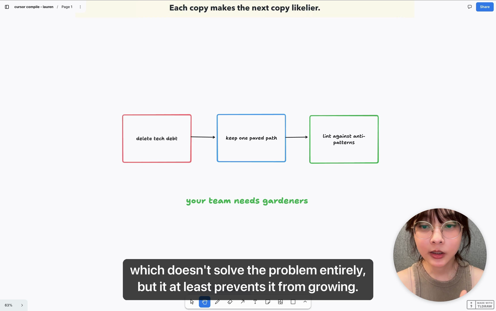
The gardener's loop: delete tech debt → keep one paved path → lint against anti-patterns.26:00
The principles behind Dune distill to three moves 25:14:
Delete the tech debt you already have — for the virus-spreading reasons above.
Keep one paved path for blessed patterns. There should be one conventional way to do things so agents never have to guess — with enough guidance in the codebase, CI, and lint rules to lead them down that path.
See a bad pattern? Write a lint rule against it. You don't have to clean everything up immediately — a lint rule "stops the bleeding": it doesn't solve the problem entirely, but it prevents it from growing. Then have agents clean it up.
"Keep your codebase constantly in a state where you would be happy if an agent were to copy it. That's the kind of mindset I would recommend having." 26:34
09
Dune — an architecture for agent-sized context
Dune is the client framework her team built to power Grok Bot. The point of this section isn't "go build Dune" — it's that an agent-friendly framework of your own is very powerful, because it's where you encode the tribal knowledge of your best engineers that used to live in style-guide reviews and PR comments.
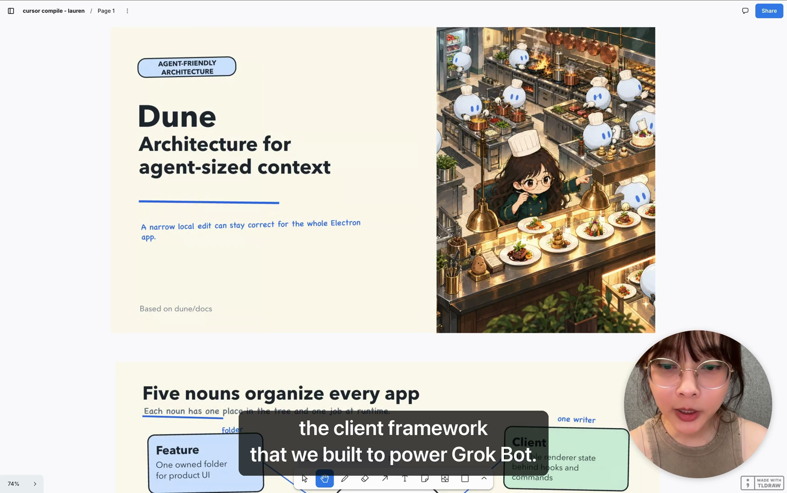
Dune's promise: "A narrow local edit can stay correct for the whole Electron app." Its design is based on the public dune/docs. 26:55
The founding lesson came from the Cursor agent window's performance work: agents love taking shortcuts — so design the framework so the shortcut is the right path. The result is a codebase that's annoying for humans (very locked down) but perfect for agents with minimal context. That matters because "not every contributor to your codebase is going to be an engineer anymore — you can have designers, product managers, CEOs going into the code base and shipping features." 19:36
Five nouns organize every app 27:16
Every Dune application is organized by five concepts, each with one place in the file tree and one job at runtime:
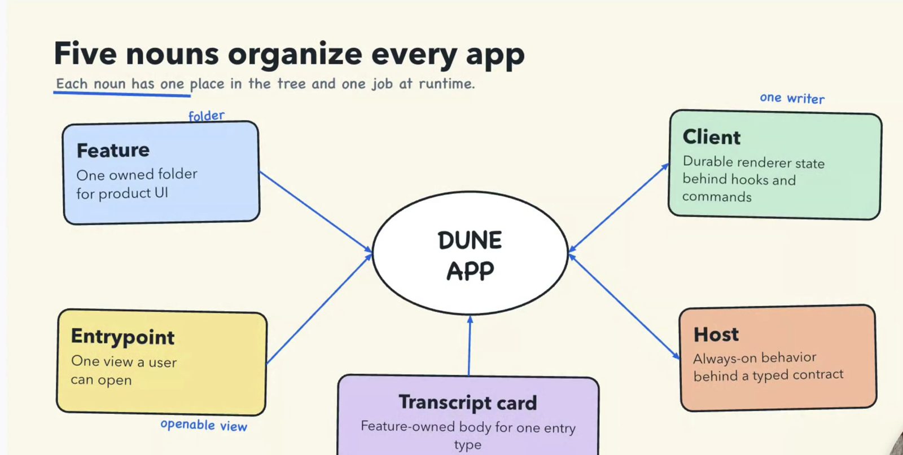
The five nouns: Feature (one owned folder for product UI), Entrypoint (one view a user can open), Transcript card (feature-owned body for one entry type), Client (durable renderer state behind hooks and commands — "one writer"), Host (always-on behavior behind a typed contract).
In the talk: features are co-located in a single folder; an entry point in the React part of the code determines what you can "think of like a route"; transcript cards show up in the application; a host runs on the Grok Bot virtual machine; and the client powers the overall application. 27:11
Process boundaries are visible in the tree 28:00
Dune keeps strict boundaries between its concepts — and the folder layout is the contract: "a folder tells an agent where code runs and which imports are legal."
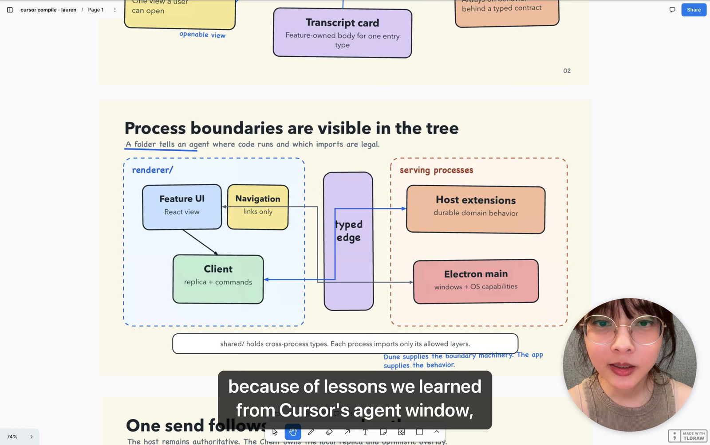
renderer/ on one side, serving processes on the other, with a typed edge between them. The fine print: "shared/ holds cross-process types. Each process imports only its allowed layers" — and, handwritten: "Dune supplies the boundary machinery. The app supplies the behavior."
The motivating failure came straight from Cursor's agent window: code occasionally got accidentally imported into the renderer thread, bringing slow work with it. The renderer must stay smooth — no long tasks over 16 ms for 60 fps, or 8 ms for 120 fps — so work has to be chunked, never done all at once. Dune enforces the boundary through the import and dependency graph, categorically eliminating the pattern instead of reviewing for it. 28:01
A feature adds files, not registry branches 29:15
Reserved filenames turn a nearby folder into the complete contribution — the build discovers them (Vite collects reserved files), startup validates them (createDuneApp freezes one catalog), and opening loads them lazily (view.tsx arrives on first use). The old shared registry.ts is crossed out: "no second list."
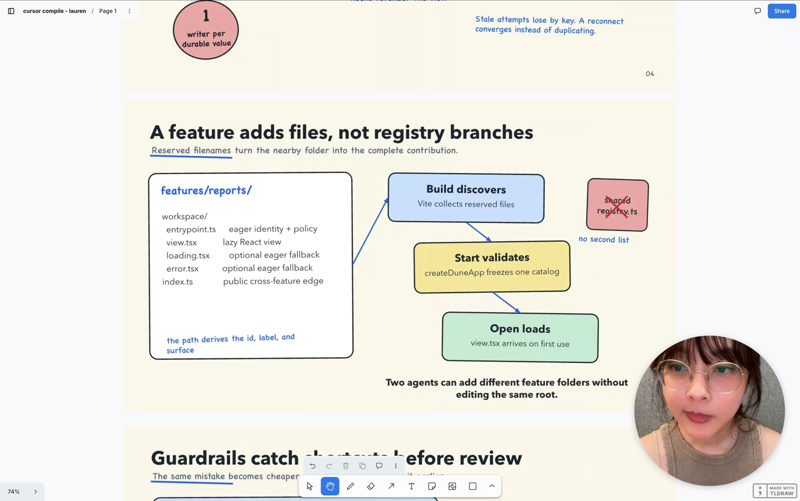
Two agents can add different feature folders without editing the same root — no merge conflicts on a central registry, and no chance to break one.
features/reports/ — the reserved filenames (from the slide)
"A vertical slice keeps transport, durable state, and React in their named owners." Each box below names real file locations — this is the concrete shape of a feature in Dune:
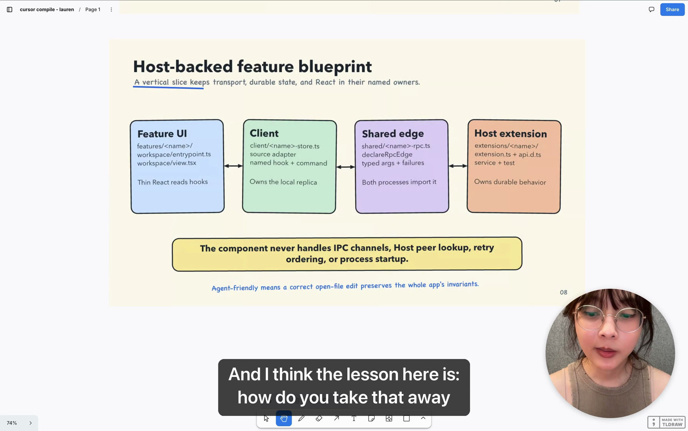
The blueprint's fine print: "The component never handles IPC channels, Host peer lookup, retry ordering, or process startup." And the definition that ties Dune together: "Agent-friendly means a correct open-file edit preserves the whole app's invariants."
extensions/<name>/ · extension.ts + api.d.ts · service + test
Owns durable behavior
Extract the style guide into the framework 30:05
"How do you take away what used to be in the style-guide process — engineers reviewing other engineers' work and leaving comments — and almost extract that knowledge and encode it into the framework, into the codebase itself? The codebase is the materialized snapshot of the state in which you want your agents to extend. You want it so pristine, so great, that the next agent that comes along is very likely to continue that pattern and keep it really good." 30:26
10
Automations — your personal Michelin kitchen
Once the layers exist, she says, you can set up "a Michelin kitchen — a software factory." Then she crosses out software factory on the slide: "I'm going to cross out this term because I don't like this term." 33:38
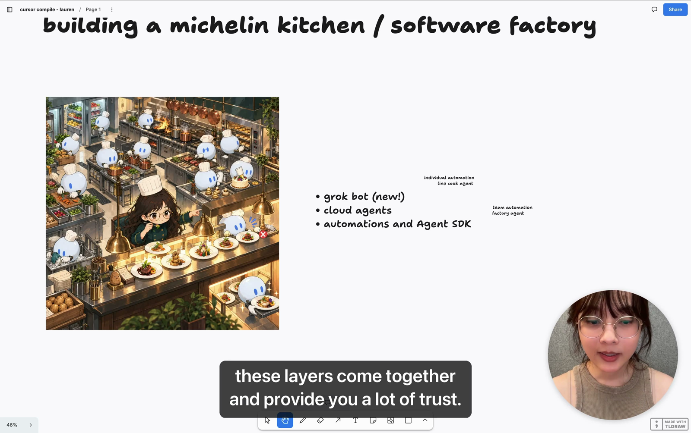
The building blocks, annotated in her handwriting: grok bot = individual automation · line cook agent; cloud agents = team automation · factory agent; plus automations and the Agent SDK. 31:00
The kitchen analogy carries the mindset, not just the vocabulary: skills and tools are how you train your line cooks; and when a cook keeps tripping over something in the kitchen, you fix the kitchen — "you problem-solve and ensure that others don't trip as well." 32:10
Grok Bot as the outer loop 32:34
Grok Bot and Cursor play complementary roles. Grok Bot provides what she calls the outer loop: connect it to services via connectors — Slack, Datadog, Sentry, PlanetScale, whatever you use — and it aggregates that information to make good decisions. Some people call this a "company brain", but she doesn't think you need anything that sophisticated: agents are already good at using tools.
Routines subscribe to Slack threads or Sentry alerts and kick work off automatically.
Grok Bot can auto-kick off cloud agents — agents with their own machines that take the task, run the app, and verify.
On the Cursor side, automations and the SDK let you set up additional bots that reuse the same agent infrastructure for more complicated tasks.
"When you combine all of these things — your codebase, your rules, your skills — they all compound, and Grok Bot will automatically respond to events that come from the outer loop and kick off cloud agents." 34:18
What it looks like in practice 34:55
She closes the section with real screenshots of the automations her team runs on Cursor: "we are automatically reproducing bug reports, we are automatically opening pull requests."
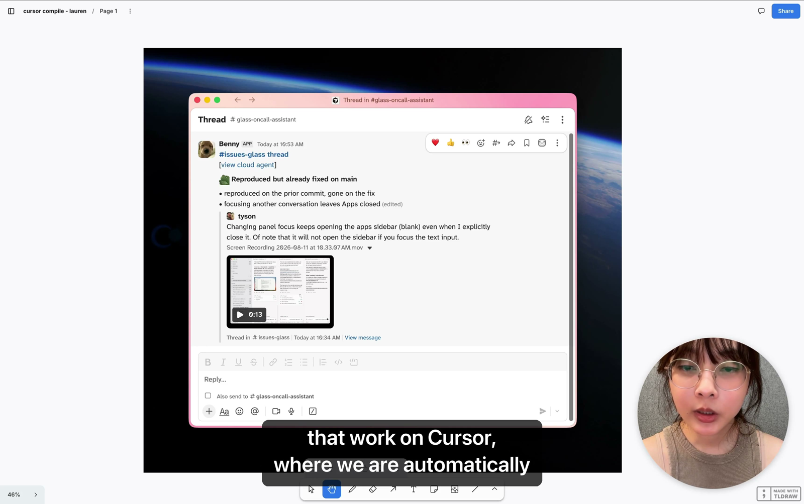
An on-call automation triaging a real bug report in Slack: the bot reproduces the reported bug on the prior commit, reports it's already fixed on main, and links to the cloud agent run (view cloud agent).
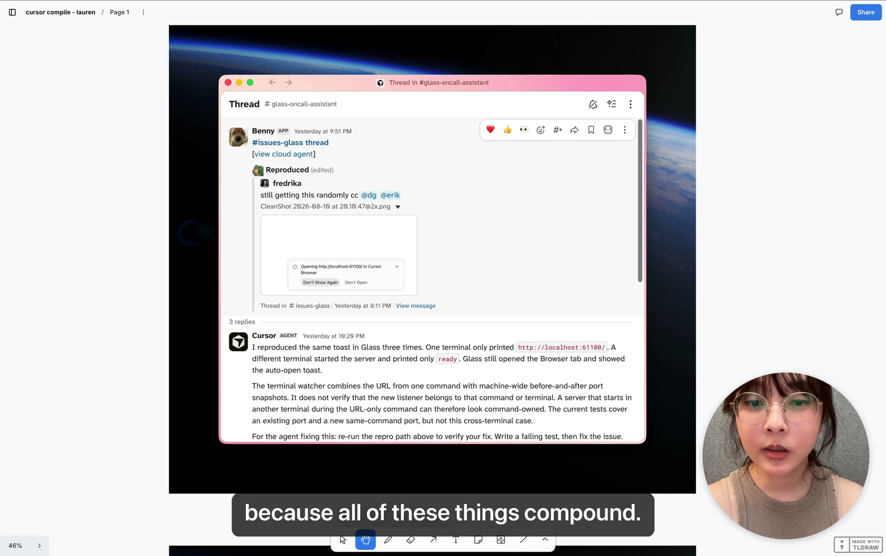
The reply from the Cursor AGENT is worth reading in full — it's the verification loop in action: it reproduced the toast three times, explained the root cause (a terminal watcher combining a URL from one command with machine-wide port snapshots, without verifying the listener's owner), noted the test gap ("current tests cover an existing port and a new same-command port, but not this cross-terminal case"), and left instructions: "For the agent fixing this: re-run the repro path above to verify your fix. Write a failing test, then fix the issue."
"Because all of these things compound… you're essentially adding a lot of value to the entire team." 35:10 And zooming back out: spend the time to ascend the trust graph, and you can parallelize your work — and empower every engineer and builder on the team to be extremely productive writing high-quality code. 35:41
11
The one takeaway
She ends by pulling the trust curve back up and then swapping it for a single slide:
"If there's only one thing you take away from my talk, it should be this slide: these are the activities that will help you build up towards a high-trust environment. Whenever you find yourself correcting and interviewing your agent, think about these five pieces — and where is the most effective step in this sequence to make your agent much more trustworthy." 36:10
Codebase — invest the time to make the pattern categorically impossible through architecture and data structures.
Static analysis (lint / compiler / CI) — enforce what you can't structurally prevent.
Rules / Bugbot — guide the agent where enforcement ends.
Skills — teach the workflows you'd teach a new teammate.
"Style guide" — the human layer; use reviews to discover what the other four layers are missing.
Do all of that, add skills for code quality, "and you get to a place where you trust the environment so much that your agents can just be free." She has spent a lot of time doing exactly this for Grok Bot's codebase:
"This is really the secret — well, it's not really a secret. It's a lot of hard work. I hope you have a lot of fun and success pulling your own Michelin kitchen." — find her on X, @poteto (potato with an e). 37:29
≡
Cheat sheet
The trust ladder — what each stage feels like
1–5 agents
babysit every chat
5–10 agents
needs verification skills
10–20 agents
needs quality skills + guardrails
Hundreds
needs locked-down codebase
Thousands
outer loop + automations compound
Verification skill anatomy
Half
Gives the agent…
Contains
Maintained by
CLI — control
reproducible hands
commands to run the real app and capture proof (drive settings, capture proof) via the debugging protocol (e.g. Chrome DevTools)
you — invest in it like infrastructure
Feature map — context
eyes and a map
what features exist, what they do, how users reach them (shortcuts, DOM elements)
an automation, stored in the skill directory
The correction sequence (lowest layer first)
1 · codebaseMake the pattern categorically impossible.
2 · static analysisLint / compiler / CI enforce the rule.
3 · rules/bugbotRemind the agent where enforcement ends.
4 · skillsTeach the workflow you'd teach a teammate.
5 · "style guide"Humans catch whatever is left — and find gaps.
Dune vocabulary
Noun
One line
Handwritten note
Feature
one owned folder for product UI
folder
Entrypoint
one view a user can open
openable view
Transcript card
feature-owned body for one entry type
Client
durable renderer state behind hooks and commands
one writer
Host
always-on behavior behind a typed contract
A→Z
Glossary
Trust curve
The talk's core graph: trust (Y) vs number of agents (X: 1 → thousands). You can only run as many agents as you can trust.
Verification skill
A skill that teaches an agent to run the real application, debug it (e.g. via the Chrome DevTools protocol), take traces/heap snapshots, and check its own work.
Control Glass
The first verification skill Lauren built for Cursor's agent window; teaches the agent to run the app and take traces through the Chrome DevTools protocol.
Feature map
Lauren's coinage (inspired by a sitemap): data in the skill directory recording what features exist, what they do, and how users reach them. "Materialized memory" for agents; maintained by an automation.
Formal verification
The high end of the verification spectrum: formal methods (Lean, TLA+) proving business-logic invariants always hold. Few teams can do this; verification skills get you very far without it.
pstack
Lauren's plugin: a collection of skills/playbooks (debugging, feature development, prototyping) that teach agents to code the way her team wants.
Bugbot
Cursor's agent code-reviewer; in the talk, part of the "rules/bugbot" guidance layer.
Paved path
The single blessed, conventional way to do something in a codebase, so agents never have to guess — enforced with guidance in code, CI, and lint rules.
Categorically impossible
Her bar for layer-1 fixes: restructure data/algorithms/architecture so the mistake can no longer be expressed at all.
Gardener
A team role that watches for creeping anti-patterns ("weeds") and removes or fences them early — delete tech debt, keep one paved path, lint against anti-patterns.
Dune
The agent-friendly client framework powering Grok Bot ("architecture for agent-sized context"; one app tree, one process tree, one runtime, based on Electron; documented in dune/docs).
Typed edge
The typed boundary between Dune's renderer and serving processes; shared/ holds cross-process types, and each process imports only its allowed layers.
16 ms / 8 ms budget
A renderer frame must complete in 16 ms for 60 fps (8 ms for 120 fps); long tasks in the renderer make the UI janky — the lesson behind Dune's main/renderer separation.
Grok Bot
The product Lauren works on at SpaceXAI; in this talk, the "outer loop" that connects to services and kicks off cloud agents.
Outer loop / company brain
Aggregating signals from tools (Slack, Datadog, Sentry, PlanetScale) so a bot can decide what work to start. Her take: don't over-engineer it — connect the tools and let agents use them.
Routine
A Grok Bot automation that subscribes to a Slack thread or Sentry alert and kicks off work automatically.
Cloud agent
An agent running on its own machine in the cloud; on the slide, the "team automation / factory agent" to Grok Bot's "individual automation / line cook agent".
Michelin kitchen
Her preferred metaphor for a high-trust agent environment (vs "software factory", which she crosses out): creative work, but the kitchen setup — equipment, training, ratio of line cooks to dishwashers — determines the output.
🔗
Resources
Original talk on X — "here's how i shipped 2,500 PRs last month to production" (Lauren Tan, September 2026; free to watch).
All screenshots are stills from the local recording of the talk, used for educational purposes. Slide text (including Dune diagrams and the Slack automation screenshots) is transcribed from the video; quotes are lightly cleaned from the auto-generated captions. "Beyond the talk" boxes contain added context not stated in the talk and are labeled as such.